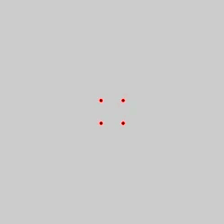

Pre-screening
Auto-Refractor

Whilst focusing on this image, this machine will measure how well your eyes focus on the image. It will blur and unblur.
ⓘ
This test is to assist your optometrist by estimating your prescription (or RX for shorthand!).
Tonometer
You will see a blinking dot and 4 puffs of air will be used to determine the pressure of your eye.
ⓘ
People with high intraocular pressure are more likely to develop glaucoma.
Visual Fields Test
This will test how sensitive your visual field is and where there are blind spots.
There are 4 red dots, fixate on the center of these dots for the entirety of the
test. You will also be handed a trigger with a button on top.
A white dot, with a brightness calibrated to the sensitivity of your eye, will appear in
different parts of your visual field. Click the button everytime you see it.
This test will discover or monitor any array of conidition including but not limited to:
- Glaucoma
- Macular degeneration
- Scotoma - Blind spot
- Cataracts
ⓘ
This test can even detect the presence of a brain tumour!